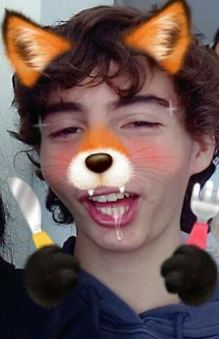
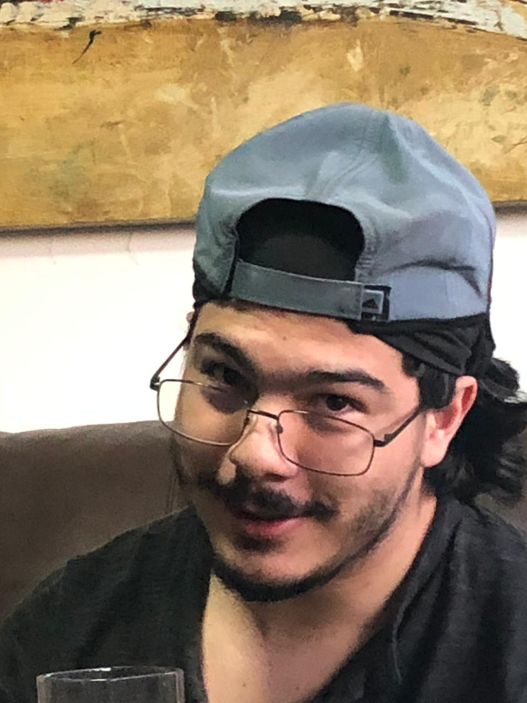
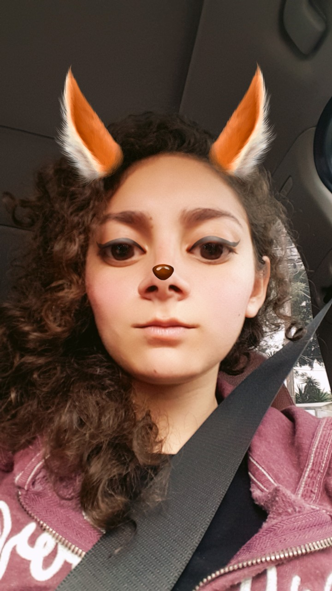

Fluffy Foxu es una marca de ropa sobre animales felpudos y lo que buscamos es que tengas una experiencia única, personalizada y sobre todo... ¡Felpuda!
Nos dedicamos a brindarte la ropa más cómoda que contenga su propio estilo de animales con mucho pelo y esponjosos y sobre todo, buscamos ayudar al ambiente de la siguiente manera:
Nuestro objetivo es poder llegar a todo publico no importando quien sea y que solo sea un amante de los animales felpudos y con muchas ganas de ayudarlos. Queremos juntar el suficiente dinero para poder ayudar a estas bellas criaturas y que tengan la vida que se merecen en su medio ambiente.
Tenemos a un gran Equipo de Trabajo con gran potencial:
Developer, Pro-Gamer, Streamer and Influencer.
Ian tiene una gran facilidad para promocionar y hacer que nuestros productos lleguen a las bocas de otros. Con sus habilidades de Streamer y gentilidad, pudimos hacer que trabajara con nosotros para poder llegar más lejos aun en nuestras metas.
Web Designer,Solutions Engineer, Meme Commander and Idea Trainer
Bernardo tiene una de las habilidades más esenciales en el proyecto, hacer reír. Pero también posee buenas habilidades para ofrecer soluciones o propuestas para que los problemas se solucione de la manera más creativa posible.
Marketing, Data Analyst, Content Editor and Laboratorian
Pilar contiene una de las habilidades más importantes del equipo saber que es lo que quiere el publico, analizar la situación de mercado y que tipo de materiales poder utilizar para las camisas.
